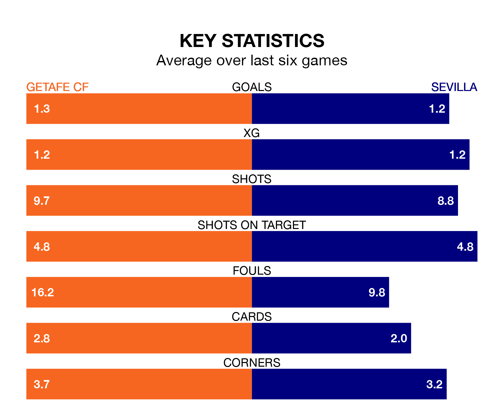

Getafe CF host Sevilla on Saturday at Coliseum Alfonso Pérez in La Liga.
In their last league match, on March 16, Getafe beat Girona 1-0 at home, with their goal scored by Jesús Santiago.
Sevilla lost, 2-1 at home against Celta de Vigo on March 17, with Youssef En-Nesyri scoring their goals.
In Borja Mayoral, Getafe have one of the league's most on-form strikers so far this season. He has notched 15 goals in 27 appearances, to sit second in the scoring charts.
His goal rate of one every 144 minutes is quicker than that of En-Nesyri, Sevilla's top scorer with a goal every 177 minutes, and a total of 10 goals in 24 games.
In the last 10 years, Getafe and Sevilla have played each other on 19 occasions. Getafe won six of them, Sevilla 11, and they drew twice.
On average, Getafe scored 0.9 goals and Sevilla 1.4 in those matches.
Their last meeting was on January 16, when Sevilla won 3-1 away.
With 36 goals in 29 games so far this season, the visitors are scoring at below the league average rate with 1.2 goals per game. And they are conceding more than average, letting in 44 goals at a rate of 1.5 per game.
The home team, meanwhile, are average scorers, with 1.3 goals per game. They have conceded 1.4 goals per game.
Sevilla are 16th in the table after 29 games, of which they have won six and drawn 10, earning 28 points.
Getafe are six places ahead of Sevilla in 10th, with nine wins and 11 draws putting them on 38 points.
Getafe are in mixed form in La Liga, with two wins and two draws from their last six games.
And also with two wins and two draws over that period, the away side's form is identical – they have both taken eight points from 18.
Updated: 12:16 (UTC), 25/03/24